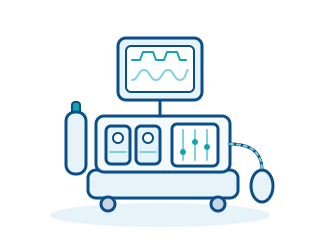

تقنيات غرف العمليات · الجهاز 13 من 28
جهاز التخدير
ضبط الغازات والتهوية والمراقبة أثناء التخدير
تقوم أجهزة التخدير (محطات عمل التخدير) بضبط جرعات الأكسجين والهواء وغازات التخدير، وتهوية المريض أثناء الجراحة، ومراقبة غازات التنفس باستمرار.

مبدأ العمل
يمزج جهاز التخدير الأكسجين والهواء الطبي، وعند الحاجة أكسيد النيتروز، من شبكة الغازات الطبية المركزية أو من الأسطوانات للحصول على تدفق غاز طازج محدد. ويضيف المبخّر (Vaporizer) إلى هذا الغاز مخدّرًا طيّارًا مثل السيفوفلوران أو الديسفلوران بتركيز قابل للضبط بدقة. ويصل خليط الغازات إلى المريض عبر دارة التنفس والأنبوب الرغامي أو القناع الحنجري.
ولأن المريض المخدَّر لا يتنفس عادةً بشكل كافٍ من تلقاء نفسه، يتولى جهاز التهوية المدمج عملية التنفس بحجم وضغط وتردد قابلة للضبط. وفي الدارة الدائرية يُعاد تدوير هواء الزفير: إذ يزيل ممتص الجير الصودي ثاني أكسيد الكربون بحيث يمكن إعادة استخدام المخدّر والأكسجين. ويقلّل التشغيل بتدفق غاز طازج منخفض (التخدير منخفض التدفق) استهلاك المخدّر ويحافظ على البيئة.
يقيس جهاز مراقبة الغازات باستمرار تركيزات الأكسجين وثاني أكسيد الكربون (تخطيط ثاني أكسيد الكربون) والمخدّر في هواء الشهيق والزفير. وبالاقتران مع جهاز مراقبة المريض (ECG، ضغط الدم، تشبع الأكسجين) تتكوّن صورة كاملة عن عمق التخدير والوظائف الحيوية. وتُطلق الإنذارات تحذيرًا عند انفصال الدارة أو توقف التنفس أو نقص الأكسجين.
مجالات الاستخدام
- التخدير العام في غرفة العمليات
- العمليات النهارية في عيادات اليوم الواحد ومراكز الجراحة
- غرف التحضير والإفاقة
- الإجراءات التشخيصية تحت التخدير (مثل الرنين المغناطيسي والتنظير)
- تخدير الأطفال بدارات تنفس خاصة
في لمحة
- فئة المخاطر (MDR)
- IIb
- أماكن الاستخدام النموذجية
- غرف العمليات، غرف الإجراءات، عيادات اليوم الواحد
- المساحة المطلوبة
- محطة عمل متنقلة، نحو 1 م² مع إمكانية الوصول إلى مخارج الغازات
- مدة الاستخدام النموذجية
- نحو 10 سنوات
ما الذي يجب مراعاته عند الشراء؟
- توضيح إمداد الغازات: يجب توافر وصلات شبكة الغازات الطبية المركزية (الأكسجين، الهواء الطبي، وأكسيد النيتروز عند استخدامه) ونظام لتصريف غازات التخدير في الغرفة، مع توافقها مع موصلات الجهاز.
- مطابقة أنماط التهوية مع فئات المرضى: يحتاج الأطفال وحديثو الولادة إلى أنماط مضبوطة بالضغط وأحجام مدّية صغيرة؛ كما تخفّض إمكانية التدفق المنخفض تكاليف المخدّر بشكل دائم.
- التخطيط للمستهلكات: يتسبب الجير الصودي ودارات التنفس والمرشحات والأقنعة ومبخّر لكل مخدّر، إضافة إلى مستشعرات ومصائد الماء لجهاز مراقبة الغازات، في تكاليف تشغيل مستمرة.
- التحقق من الواجهات: نقل البيانات إلى سجل التخدير الإلكتروني أو نظام إدارة بيانات المرضى (PDMS) والربط مع جهاز مراقبة المريض.
- الاتفاق على فحوصات السلامة التقنية الدورية (STK) وفق لائحة تشغيل الأجهزة الطبية الألمانية (MPBetreibV)، وفترات الصيانة، وعقد خدمة بزمن استجابة محدد؛ وتندرج أجهزة التخدير ضمن الملحق 1 من هذه اللائحة، لذا يجب مسك سجل الجهاز الطبي وتوثيق تدريب جميع المستخدمين فيه.
مصطلحات مهمة
- المبخّر (Vaporizer)
- وحدة تُبخّر المخدّر السائل في تدفق الغاز الطازج بطريقة مضبوطة؛ ويحتاج كل مخدّر إلى مبخّر خاص به ومعاير.
- الدارة الدائرية
- دارة تنفس يُعاد فيها هواء الزفير إلى المريض بعد إزالة ثاني أكسيد الكربون بواسطة الجير الصودي – ما يوفّر غاز التخدير ويحافظ على رطوبة غاز التنفس وحرارته.
- تخطيط ثاني أكسيد الكربون (Capnography)
- قياس مستمر لثاني أكسيد الكربون في هواء الزفير؛ يؤكد الموضع الصحيح للأنبوب الرغامي ويبيّن جودة التهوية.
هل تخطّطون لشراء جهاز من هذا النوع؟
نقدّم لكم استشارة محايدة تجاه الشركات المصنّعة، ونقارن عروض الأسعار، ونرافق عملية التوريد.